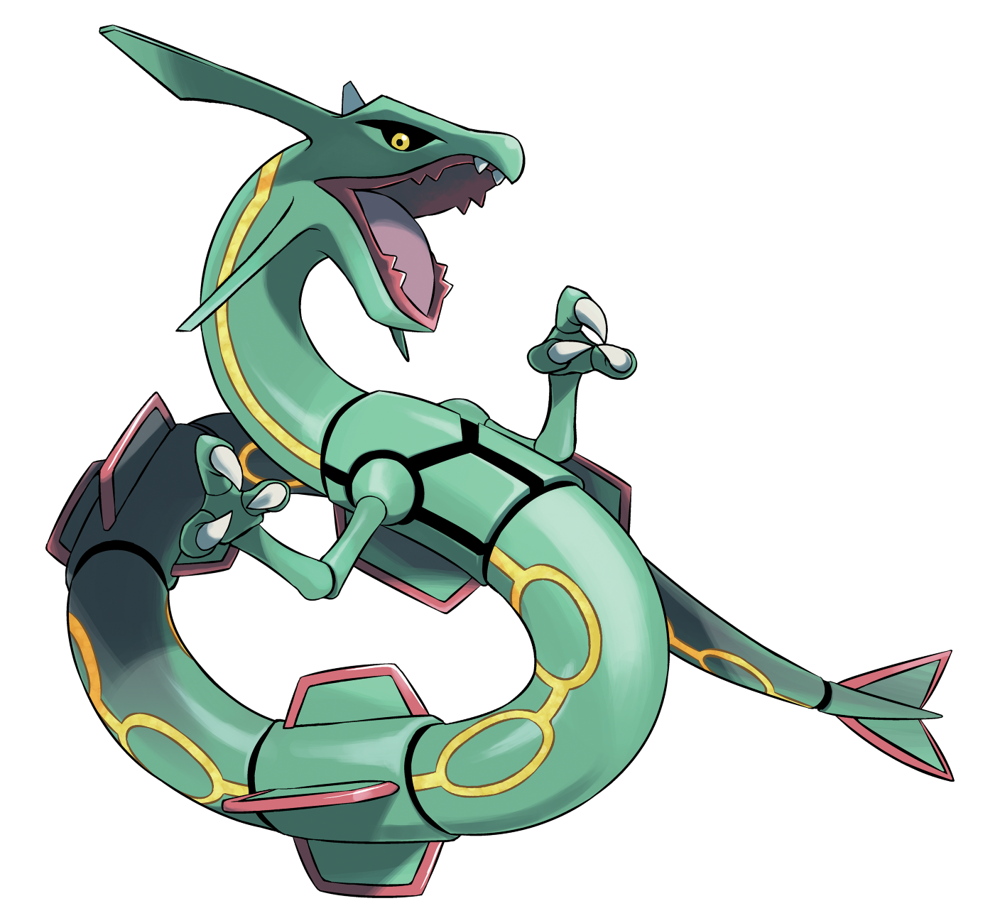

Tipo:
Dragón
Volador
Descripción:
Rayquaza ha vivido durante cientos de millones de años en la capa de ozono,
sin descender jamás a la superficie. Se alimenta de meteoritos y es conocido
por poner fin a los enfrentamientos entre Kyogre y Groudon.